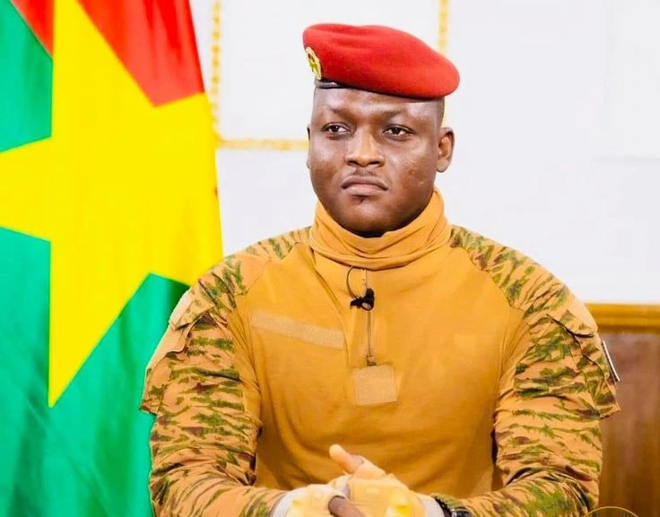
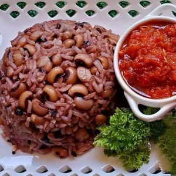
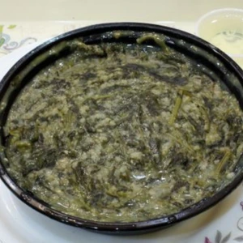
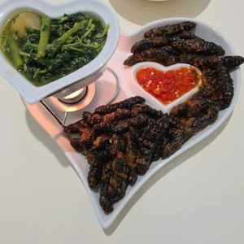
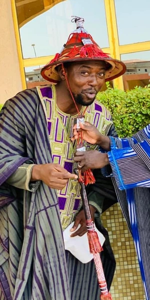
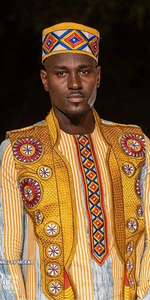
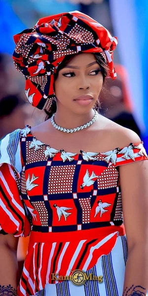
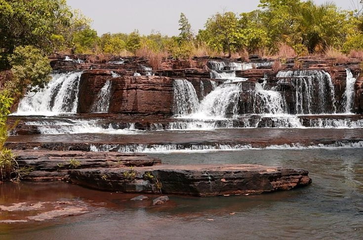
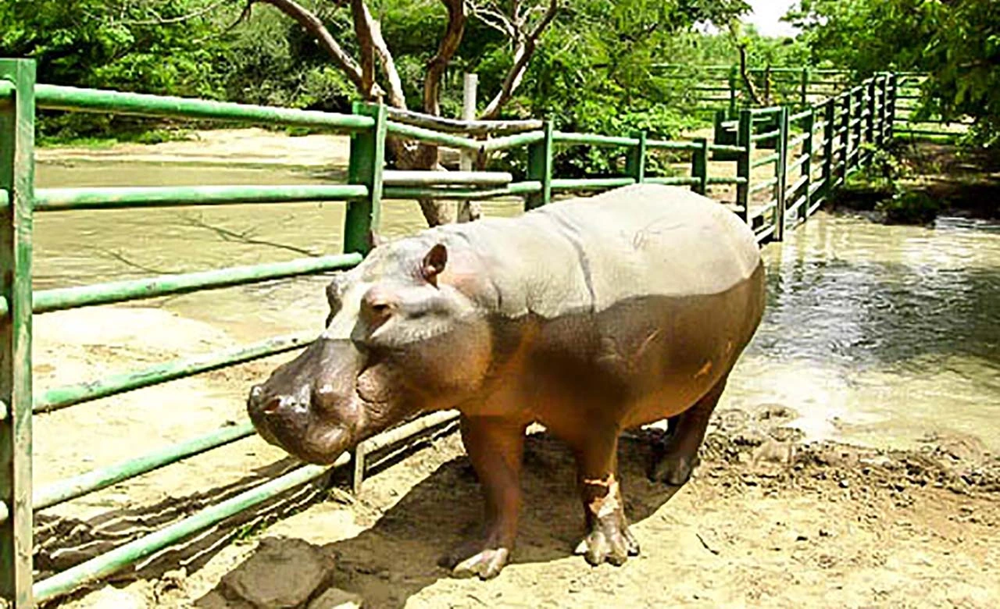
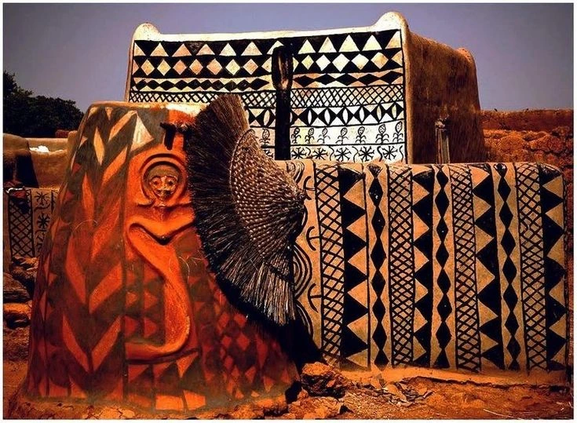

Le
Burkina Faso 🇧🇫 ou encore “le pays des hommes intègres” , est un État d’Afrique de l’Ouest. Sa capitale est Ouagadougou , souvent considérée comme le cœur culturel et politique du pays. Avec une superficie d’environ 274 200 km² , il est entouré de six pays : le Mali au nord, le Niger à l’est, le Bénin au sud-est, le Togo et le Ghana au sud, et la Côte d’Ivoire au sud-ouest .
Histoire et identité
Anciennement appelé la Haute-Volta durant la période coloniale, le pays a obtenu son indépendance en 1960.
En 1984, sous la présidence du Capitaine Thomas Sankara, il a été renommé Burkina Faso, signifiant “la patrie des hommes intègres” en langues mooré et dioula.
Population et culture
Le Burkina Faso compte environ 23 millions d’habitants, composés de plusieurs groupes ethniques comme les Mossis (majoritaires), les Peuls, les Gourmantchés, et les Bobo.
Les langues officielles sont le français (hérité de la colonisation) et plusieurs langues nationales, notamment le mooré, le fulfuldé, et le dioula.
Le pays est réputé pour sa richesse culturelle, avec des traditions vivantes en musique, danse, artisanat, et festivals comme le FESPACO (Festival panafricain du cinéma de Ouagadougou).
Géographie et climat
Le paysage burkinabé est dominé par des savanes et des plaines. Au nord, on trouve des régions semi-arides proches du désert du Sahara, tandis que le sud est plus verdoyant.
Le climat est de type tropical soudano-sahélien, avec une saison sèche et une saison des pluies.
Économie
L’économie repose essentiellement sur l’agriculture et l’élevage, qui emploient la majorité de la population. Le pays est également un important producteur d’or, une ressource clé pour son économie.
Malgré ses richesses naturelles, le Burkina Faso fait face à des défis économiques et sociaux importants, avec un niveau de vie modeste pour une grande partie de la population.
Défis contemporains
Depuis quelques années, le pays est confronté à des problèmes d’insécurité liés à des attaques terroristes dans certaines régions, affectant la stabilité et le développement.
Malgré ces défis, le Burkina Faso reste un symbole de résilience et d’engagement, avec un peuple attaché à ses valeurs de solidarité et d’intégrité.
Le Burkina Faso est ainsi un pays au croisement de traditions riches et de modernités en construction, mêlant défis et espoirs pour l’avenir.

L’actuel Président du Burkina Faso est le Capitaine Ibrahim Traoré
Quelques mets locaux

Benga
Memoratur eo auctoris Tarsus Sandan delatumque repentina et memoratur mors vellere Aethiopia a redirent hanc.

Babenda
Memoratur eo auctoris Tarsus Sandan delatumque repentina et memoratur mors vellere Aethiopia a redirent hanc.

Chitoumou
Memoratur eo auctoris Tarsus Sandan delatumque repentina et memoratur mors vellere Aethiopia a redirent hanc.
Quelques Habits traditionnelles



Quelques sites touristiques

Les Cascades de Banfora
Memoratur eo auctoris Tarsus Sandan delatumque repentina et memoratur mors vellere Aethiopia a redirent hanc.

Parc animalier de Ziniare
Memoratur eo auctoris Tarsus Sandan delatumque repentina et memoratur mors vellere Aethiopia a redirent hanc.

La cour royale de Tiébélé
Memoratur eo auctoris Tarsus Sandan delatumque repentina et memoratur mors vellere Aethiopia a redirent hanc.